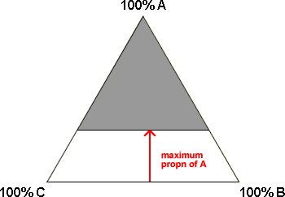

Maximum values for some proportions
The problem of designing an experiment becomes harder when a maximum value is also specified for some ingredients. For example, in the fruit juice mixture, it may be decided that no more than 5% of mango juice should be used because of its cost.
If there is a constraint that the proportion of ingredient A in a 3-ingredient mixture should be no more than 35%, the design points for the experiment should be in the white region below.

With this type of constraint, the region of feasible mixtures is no longer a triangle.
Fat content of biscuits
We simplified the constraints that were needed for the 8% of fats in the recipe for almond biscuits in the previous page. The baker put further constraints on the maximum proportions of Margarine and Canola in the recipe. The full constraints in the experiment are shown in the table below.
| Ingredient | Minimum | Maximum |
|---|---|---|
| Butter | 3.4% | 8% |
| Margarine | 0% | 0.7% |
| Canola | 0% | 1.8% |
With careful consideration of the maximum percentages of Margarine and Canola in the recipe, we can tighten the restrictions on the amount of Butter:
| Ingredient | Minimum | Maximum |
|---|---|---|
| Butter | 5.5% | 8% |
| Margarine | 0% | 0.7% |
| Canola | 0% | 1.8% |
The triangle on the left below shows the restrictions on the proportions. The white area shows the design region — combinations of ingredients that satisfy the minima and maxima in the table.
The diagram on the right shows the corresponding proportions within the 2.5% of the recipe that can be varied — i.e. excluding the minimum 5.5% of Butter and 92% of other ingredients.